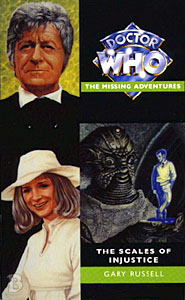

|
The Scales of Injustice
|
BASIC PLOT DOCTOR COMPANIONS MATERIALISATION CIRCUIT PREPARATORY READING CONTINUITY REFERENCES "She will also work closely with Dr Sweetman on medical matters." Dr Sweetman was originally the name of the medical doctor referred to in Planet of the Spiders. This reference was changed to Dr Sullivan, in order to foreshadow Harry, but the original reference appears in the novelisation. Pg 19 "Instead she had fought a variety of all-out wars against Nestenes, strange ape men, stranger reptile men, paranoid aliens and other assorted home-grown and extra-terrestrial menaces." Spearhead from Space, Inferno, Doctor Who and the Silurians, The Ambassadors of Death. "Her most recent assignment had pitted her against an alien for not only far away - the tropics - but, via the Doctor's 'space-time visualizer', back and forth in time as well." The Eye of the Giant. Pg 21 "After our little sojourn in the Pacific Islands, and poor Amelia Grover's sacrifice to the future, you asked me to try and get the TARDIS working." The Eye of the Giant. Pg 23 "He'd had to [...] assault Trevithick in 'They came from the Depths'. Trevithick appeared in Nightshade. Pg 26 Reference to Jimmy Munro (Spearhead from Space). Pg 33 "I've had to get all genned up on all this space defence stuff ever since Jim Quinlan's death" The Ambassadors of Death. "Lord Rowlands' Gang of Four." Tubby Rowlands was mentioned in Terror of the Autons. Pg 35 Jeff Johnson was a soldier in The Ambassadors of Death. He's Liz Shaw's partner here because he was played by her real-life partner Geoffrey Beevers. "Mankind would have fallen to the Nestenes, or the terrible liquid gases that Stahlman had discovered, if UNIT hadn't intervened." Spearhead from Space, Inferno. Pg 36 "But Liz, what about Florana?" Death to the Daleks. "May Week's in June." This whole sequence is paraphrased from Shada for no apparent reason. Pg 63 "Alistair Lethbridge-Stewart, the Brigadier, could face Cybermen, Yetis and Autons." The Invasion, The Web of Fear, Spearhead from Space. Pg 69 References to Jimmy Munro (Spearhead from Space), James Turner (The Invasion) and his "dolly wife", Isobel Watkins (The Invasion). Pg 70 "Now after having worked closely with the Doctor during their recent sojourn to the Pacific Islands" Eye of the Giant. Pg 80 "A pleasant little vinegar he'd picked up on Elbyon" The Sorcerer's Apprentice. Pg 89 "Icthar and his Shelter had awoken around forty years previously" This is a reference to one of the Audio Visual plays. Pg 100 Reference to Commodore Gilmore (Remembrance of the Daleks). Gilmore has been promoted since Downtime. Pg 114 "If Fiona had known he was spending his days inside a massive aircraft, inside a military hangar..." The Invasion. "Young Captain Walters excelled in looking after the hardware..." Sergeant Walters from The Invasion. Pg 117 "All I need now is Scobie to accidentally launch an all-out nuclear strike against the Chinese, and my day will be perfect." This prefigures the delicate international situation viz a viz the Chinese, as we later see in Day of the Daleks (which was never quite so bad in our Universe). Pg 119 "One day a man it had trusted had come into its cage with a large syringe of a thick green ooze, which bubbled slightly." Stahlman's gas, from Inferno. Pg 131 "It was about how his life had altered following that meeting with Air Vice-Marshal Gilmore after the 'London Event'." We saw this meeting in Downtime. The 'London Event' was the Yeti invasion in the Web of Fear. Pg 132 "She'd given him a present then: a watch." We first heard about the Brigadier's meeting with Doris in Brighton in Planet of the Spiders. "Just a few lines - crammed into a few moments between a battle with Cybermen and Autons or some such." The Invasion, Spearhead from Space. Pg 134 "There were Nestenes and Delphons and something called the Great Intelligence. There were Cybermen and Daleks and Zarbi and Drahvins according to the Doctor." Spearhead from Space, The Abominable Snowmen/The Web of Fear, The Tenth Planet et al, The Daleks et al, The Web Planet/Twilight of the Gods, Galaxy Four. Pg 135 "Should the entire human race be wiped out because of a few Hitlers, or Ghengis Khans or Magnus Greels?" The Talons of Weng-Chiang. Pg 136 "One day, we may see a fox in Picadilly again." Mike Yates sees this in The Invasion of the Dinosaurs. Pg 137 "I said I wasn't interested in spies, invisible ink or anything like that." Spearhead from Space. Pg 143 "It was a massive cavern, reminding the Doctor of the Panopticon on Gallifrey." The Deadly Assassin. Pg 154 "After what was referred to in ministerial papers, all marked Top Secret and Eyes Only, as 'The Shoreditch Incident', the responsibility for the Intrusion Counter Measures Group was handed over to C19" Remembrance of the Daleks. "An experienced Air Force Captain, Ian Gilmore, was promoted and asked to lead the new unit. He in turn requested the scientific help of an advisor called Rachel Jensen whom he knew to have been pivotal in Turing's work with computers during the war, expanding upon the aborted Judson Ultima Machine." Remembrance of the Daleks, The Curse of Fenric. Rachel's work with Turing is from the novelisation of Remembrance of the Daleks. "Jensen agreed to help Gilmore, also suggesting the recruitment of a number of her Cambridge proteges, including Allison Williams, Ruth Ingram and Anne Travers." Remembrance of the Daleks, The Time Monster, The Web of Fear. "A few years later, London was evacuated, reportedly due to a nerve-gas explosion that froze the capital" The Web of Fear. Pg 159 "A portrait that showed the head and shoulders of a man in his late fifties." Tobias Vaughn, The Invasion. Pg 162 The Doctor meets Icthar, Scibus and Tarpok, prefiguring his knowing them in Warriors of the Deep. Pg 181 "I've travelled through time rips." Eye of the Giant. "Best I've done is [...] have a Nestene Energy Unit delivered to the National Space Museum." Spearhead from Space... and this prefigures its appearance there in Terror of the Autons. Pg 182 "I can't say they died when an Auton shot them in Essex or a supposedly friendly alien shoved more radiation through their body than they'd get if they sat in a reactor in Windscale for six months." Spearhead from Space, The Ambassadors of Death. Pg 185 "It had been, ever since that business in the Underground a few years back." Pg 187 "He had been there after that business with international Electromatics" The Invasion. Pg 191 "My life expectancy, barring accidents, is longer than the average human's." Paraphrase from The War Games. Pg 205 "After that business with the electronics firm with the dodgy components in their wirelesses." The Invasion. Pg 206 Sir Marmaduke saw one craft which he recognised as Mars Probe Six." The Ambassadors of Death. "With James Quinlan's death and Professor Cornish's retirement, the Government put the whole thing in limbo." The Ambassadors of Death. "They're looking at moving part of it down to Devesham in Oxfordshire" The Android Invasion. Pg 208 "WOTAN? My God, I thought it was destroyed." The War Machines. Pg 209 "Every day millions of particles of dust enter our biosphere from outer space." This is a paraphrase from Spearhead from Space. Pg 211 "It's where we first met - at UNIT's temporary headquarters in central London. Before we all moved to priory mews in Denham." This ties in with UNIT HQ being on the site of the old priory in Pyramids of Mars. "I spoke to you in Delphon." Spearhead from Space. "It's an old Tibetan trick. It slows your metabolic rate right down to the bare minimum." The Doctor also uses this trick in Terror of the Zygons. Pg 213 "Here I am in your mind, your memories, and yet I'm holding my Triacteon Zeiton Regulator and it's fixed. Ever since I was exiled here, the TZR has needed repair, but I've never managed it. [...] Thank you, Doctor Shaw. When we get back, I now know how to repair it." Presumably this device regulares the flow of Zeiton 7, which we hear about in Vengeance on Varos. It may also be the piece of equipment that Jo destroys at the beginning of Terror of the Autons, as it there appears then to have been a breakthrough in his continuing work to escape his exile. Pg 222 "One colony awoke about fifty years ago in the Antarctic regions." The Audio Visual play. Pgs 226-227 "C19 are working on a sub-machine-gun that fires armour piercing explosives like bullets." The Brigadier refers to these in Battlefield. Pg 232 "He had begun working with the Brigadier shortly after the business with the Great Intelligence in the London Underground." The Web of Fear. "It had been Major General Rutlidge, the Brigadier's original liaison with the army, who had put John Benton's name forward" The Invasion. "Both he and Jack Tracy had experience of undercover work." The Invasion. Reference to Sergeant Walters (The Invasion) and Captain Munro (Spearhead from Space). Pg 233 "Even a major, Alex Cosworth, on attachment for six months from the regular army." The Mind of Evil. Pg 240 "I want to use my training, my knowledge to help these people." Liz is later seen still helping the Silurians in Eternity Weeps. Pg 241 "Here we have Cyber-guns, Nestene energy units, phials of the Silurian plague." The Invasion, Spearhead from Space, Doctor Who and the Silurians. "Inside a barred cage was the lower half of a cream-coloured Dalek, stained with green and pitted with bullet holes." Remembrance of the Daleks. "Oh, George Ratcliffe. Right-wing leader of a post-war pro-segregation group." Remembrance of the Daleks. "Melvin Krimpton. I'm sure you knew him." The War Machines. Pg 242 "Up there is one Stephen Weams, over there is George Hibbert and right back here is Mark Gregory" The Web of Fear, Spearhead from Space (but see Continuity Cock-ups), The Invasion. "Imagine if we sent an army of Autons into Northern Ireland. Imagine if we'd helped the yanks in Vietnam using a War Machine or two." Spearhead from Space, The War Machines. Pg 245 "Nothing larger than a field mouse could get into Smallmarshes." Paraphrase from Robot. Pg 259 "For the last eight months, ever since that bizarre visit to the Cottage Hospital in Essex" Spearhead from Space. "She wanted to shake hands with an Alpha Centauran tennis player. To play hide and seek with a Refusian, or say hello to a Delphon with her eyebrows" The Curse of Peladon/Monster of Peladon, The Ark, Spearhead from Space. OLD FRIENDS AND OLD ENEMIES General Scobie (Spearhead from Space), Corporal Bell (Mind of Evil, The Claws of Axos), Tom Osgood (The Daemons), Corporal Champion (The Ambassadors of Death), . Maisie Hawke is intended to be the unnamed UNIT radio operator played by Gypsie Kemp in Day of the Daleks. The Brigadier's daughter Kate appeared in Downtime. The Silurians, the Sea Devils and a Myrka. Including Icthar and Scibus, from Warriors of the Deep (page 90) and Tarpok (page 162) from the same story. Pg 108 Journalist Michael Wagstaffe, one of the reporters from Spearhead from Space. Pg 159 Bailey, the munitions expert names a character who appeared in The Mind of Evil. The Glasshouse, which was introduced in Who Killed Kennedy, although this one is actually a different Glasshouse. NEW FRIENDS AND NEW ENEMIES The blond man, who goes on to appear in Business Unusual. The pale young man, who goes on to appear in Business Unusual. Pg 74 Bob Lines, who goes on to appear in Business Unusual and Instruments of Darkness. Pg 76 Patricia Haggard is the PROBE investigator played by Louise Jameson in the BBV spinoff videos. Pg 207 Lawson reappears in Business Unusual. Baal, Sula, Tahni, Auggi, Peter Morley, Farley. This book also introduces Fiona Lethbridge-Stewart, the Brigadier's first wife (first mentioned in Downtime), although they divorce throughout the course of the novel.
CONTINUITY COCK-UPS PLUGGING THE HOLES [Fan-wank theorizing of how to fix continuity cock-ups] FEATURED ALIEN RACES The Silurians, the Sea Devils and a hybrid race of the two (pictured on the cover). A Myrka (page 246). The pale young man is a cybernetically altered human (page 244). Cellian and Ciara are humans augmented with Nestene fluid (page 253). FEATURED LOCATIONS Dungaress. Cambridge. Smallmarshes in Kent. Northumberland. A boat (page 189). The channel island L'Ithe (and a Silurian base underneath it). (On page 210 Liz dreams of being back home in Burton Joyce.) IN SUMMARY - Robert Smith? |
|
 |